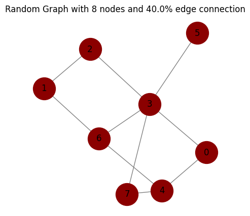
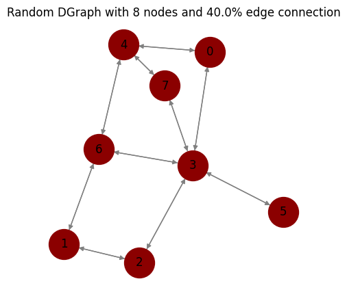
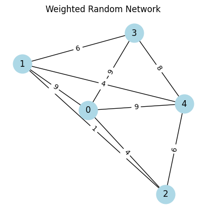
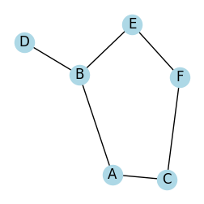
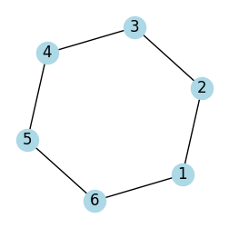
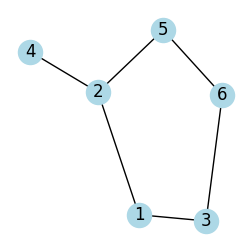
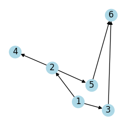
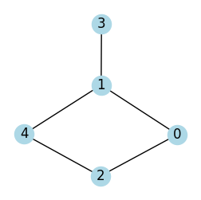

Chapter 2¶
Graph Theory¶
Code by : Abolfazl Ziaeemehr

[1]:
# uncomment and run this line to install the package on colab
# !pip install "git+https://github.com/Ziaeemehr/netsci.git" -q
[1]:
import netsci
import numpy as np
import networkx as nx
from tqdm import tqdm
import matplotlib.pyplot as plt
from netsci.plot import plot_graph
from netsci.analysis import find_sap, find_hamiltonian_path
[2]:
np.random.seed(0)
[3]:
# make a random graph with n nodes and p% probability of edge connection
num_nodes = 8
probability = .4
seed = 2
graph = nx.gnp_random_graph(num_nodes, probability, seed=2, directed=False)
# degree distribution
degrees = dict(graph.degree())
print("Degrees:", degrees)
# calculate the average degree
average_degree = np.mean(list(degrees.values()))
print("Average degree:", average_degree)
# adjacency matrix
adjacency_matrix = nx.to_numpy_array(graph).astype(int)
print("Adjacency matrix:\n", adjacency_matrix)
# edges
edges = list(graph.edges())
print("Edges:", edges)
# plot the graph
plot_graph(graph, node_size=1000,
node_color='darkred',
edge_color='gray',
figsize=(5, 5),
title="Random Graph with {} nodes and {}% edge connection".format(num_nodes, probability*100))
plt.show()
Degrees: {0: 2, 1: 2, 2: 2, 3: 5, 4: 3, 5: 1, 6: 3, 7: 2}
Average degree: 2.5
Adjacency matrix:
[[0 0 0 1 1 0 0 0]
[0 0 1 0 0 0 1 0]
[0 1 0 1 0 0 0 0]
[1 0 1 0 0 1 1 1]
[1 0 0 0 0 0 1 1]
[0 0 0 1 0 0 0 0]
[0 1 0 1 1 0 0 0]
[0 0 0 1 1 0 0 0]]
Edges: [(0, 3), (0, 4), (1, 2), (1, 6), (2, 3), (3, 5), (3, 6), (3, 7), (4, 6), (4, 7)]

[4]:
# shortest path, find distance between two nodes
source = np.random.randint(0, len(graph)) # random source node
target = np.random.randint(0, len(graph)) # random target node
shortest_path = nx.shortest_path(graph, source, target)
print("Shortest path from", source, "to", target, ":", shortest_path)
# diameter : maximal shortest path length
if nx.is_connected(graph):
diameter = nx.diameter(graph)
print("Diameter:", diameter)
# average shortest path length
avg_shortest_path_length = nx.average_shortest_path_length(graph)
print(f"Average shortest path length: {avg_shortest_path_length:.2f}")
Shortest path from 3 to 0 : [3, 0]
Diameter: 3
Average shortest path length: 1.82
[5]:
# directed graph
graph_dir = nx.to_directed(graph)
plot_graph(graph_dir,
node_size=1000,
node_color='darkred',
edge_color='gray',
figsize=(5, 5),
seed=1,
title="Random DGraph with {} nodes and {}% edge connection".format(num_nodes, probability*100));

[6]:
# weighted graph
seed = 3
np.random.seed(seed) # to fix the plot
num_nodes = 5
probability = 0.8
graph_w = nx.erdos_renyi_graph(num_nodes, probability, seed=seed)
for (u,v) in graph_w.edges():
graph_w[u][v]['weight'] = np.random.randint(1, 10)
# plot the weighted graph
edge_labels = nx.get_edge_attributes(graph_w, 'weight')
plot_graph(graph_w,
with_labels=True,
node_color='lightblue',
node_size=700,
font_size=12,
edge_labels=edge_labels,
figsize=(5, 5),
title="Weighted Random Network")
weighted_adjacency_matrix = nx.to_numpy_array(graph_w, weight='weight').astype(int)
print("Weighted adjacency matrix:\n", weighted_adjacency_matrix)
Weighted adjacency matrix:
[[0 9 4 9 9]
[9 0 1 6 4]
[4 1 0 0 6]
[9 6 0 0 8]
[9 4 6 8 0]]

self avoiding path
[7]:
# Create a graph
G = nx.Graph()
edges = [('A', 'B'), ('A', 'C'), ('B', 'D'), ('B', 'E'), ('C', 'F'), ('E', 'F')]
G.add_edges_from(edges)
# Find all self-avoiding paths from 'A' to 'F'
start_node = 'A'
target_node = 'F'
all_saps = list(find_sap(G, start_node, target_node))
for path in all_saps:
print("->".join(path))
plot_graph(G, seed=2, figsize=(3, 3))
A->B->E->F
A->C->F
[7]:
<Axes: >

A Hamiltonian path is a path in a graph that visits each vertex exactly once.
[8]:
# Example usage
G = nx.Graph()
G.add_edges_from([(1, 2), (2, 3), (3, 4), (4, 5), (5, 6), (6, 1)])
plot_graph(G, seed=2, figsize=(3, 3))
path = find_hamiltonian_path(G)
if path:
print("Hamiltonian Path found:", path)
else:
print("No Hamiltonian Path found")
Hamiltonian Path found: (1, 2, 3, 4, 5, 6)

[9]:
# hamiltonian path of weighted graph:
path = find_hamiltonian_path(graph_w)
if path:
print("Hamiltonian Path found:", path)
else:
print("No Hamiltonian Path found")
Hamiltonian Path found: (0, 1, 2, 4, 3)
Adjacency List
[10]:
G = nx.Graph()
edges = [(1, 2), (1, 3), (2, 4), (2, 5), (3, 6), (5, 6)]
G.add_edges_from(edges)
plot_graph(G, seed=2, figsize=(3, 3))
adjacency_matrix = nx.to_numpy_array(G).astype(int)
print(f"adjacency matrix\n {adjacency_matrix}")
adjacency_list = {n: list(neighbors) for n, neighbors in G.adj.items()}
print(f"adjacency list\n {adjacency_list}")
adjacency matrix
[[0 1 1 0 0 0]
[1 0 0 1 1 0]
[1 0 0 0 0 1]
[0 1 0 0 0 0]
[0 1 0 0 0 1]
[0 0 1 0 1 0]]
adjacency list
{1: [2, 3], 2: [1, 4, 5], 3: [1, 6], 4: [2], 5: [2, 6], 6: [3, 5]}

Adjaceccy list of directed graph:
[11]:
G = nx.DiGraph()
edges = [(1, 2), (1, 3), (2, 4), (2, 5), (3, 6), (5, 6)]
G.add_edges_from(edges)
plot_graph(G, seed=2, figsize=(3, 3))
adjacency_matrix = nx.to_numpy_array(G).astype(int)
print(f"adjacency matrix\n {adjacency_matrix}")
adjacency_list = {n: list(neighbors) for n, neighbors in G.adj.items()}
print(f"adjacency list\n {adjacency_list}")
adjacency matrix
[[0 1 1 0 0 0]
[0 0 0 1 1 0]
[0 0 0 0 0 1]
[0 0 0 0 0 0]
[0 0 0 0 0 1]
[0 0 0 0 0 0]]
adjacency list
{1: [2, 3], 2: [4, 5], 3: [6], 4: [], 5: [6], 6: []}

Implementation of BFS for Graph using Adjacency List:
[12]:
from collections import deque
# Function to perform Breadth First Search on a graph
# represented using adjacency list
def bfs(adjList, startNode, visited):
# Create a queue for BFS
q = deque()
# Mark the current node as visited and enqueue it
visited[startNode] = True
q.append(startNode)
# Iterate over the queue
while q:
# Dequeue a vertex from queue and print it
currentNode = q.popleft()
print(currentNode, end=" ")
# Get all adjacent vertices of the dequeued vertex
# If an adjacent has not been visited, then mark it visited and enqueue it
for neighbor in adjList[currentNode]:
if not visited[neighbor]:
visited[neighbor] = True
q.append(neighbor)
# Function to add an edge to the graph
def addEdge(adjList, u, v):
adjList[u].append(v)
def main():
# Number of vertices in the graph
vertices = 5
# Adjacency list representation of the graph
adjList = [[] for _ in range(vertices)]
# Add edges to the graph
addEdge(adjList, 0, 1)
addEdge(adjList, 0, 2)
addEdge(adjList, 1, 3)
addEdge(adjList, 1, 4)
addEdge(adjList, 2, 4)
# Mark all the vertices as not visited
visited = [False] * vertices
# Perform BFS traversal starting from vertex 0
print("Breadth First Traversal starting from vertex 0:", end=" ")
bfs(adjList, 0, visited)
#plot the graph
G = nx.Graph()
G.add_edges_from([(0, 1), (0, 2), (1, 3), (1, 4), (2, 4)])
plot_graph(G, seed=2, figsize=(3, 3))
if __name__ == "__main__":
main()
Breadth First Traversal starting from vertex 0: 0 1 2 3 4

[13]:
from netsci.analysis import graph_info
graph_info(graph_w)
Graph information
Directed : False
Number of nodes : 5
Number of edges : 9
Average degree : 3.6000
Connectivity : connected
Table 2.1¶
[14]:
import networkx as nx
import pandas as pd
from netsci.analysis import average_degree
from netsci.utils import list_sample_graphs, load_sample_graph
[22]:
# nets = list(list_sample_graphs().keys())
nets = [
'Collaboration',
'Internet',
'PowerGrid',
'Protein',
'PhoneCalls',
'Citation',
'Metabolic',
'Email',
'WWW',
'Actor'
]
run the following only on colab¶
[ ]:
from google.colab import drive
import os
# URL of the zip file to be downloaded
url = "https://networksciencebook.com/translations/en/resources/networks.zip"
# Mount Google Drive
drive.mount('/content/drive')
# Create the 'network_science' directory in MyDrive if it doesn't exist
network_science_dir = '/content/drive/MyDrive/network_science'
os.makedirs(network_science_dir, exist_ok=True)
# empty the directory
!rm -rf /content/drive/MyDrive/network_science/*
# Change directory to 'network_science'
os.chdir(network_science_dir)
# Download the zip file to the 'network_science' directory
!wget $url -O networks.zip
# Unzip the downloaded file in the 'network_science' directory
!unzip networks.zip
json_file = "https://raw.githubusercontent.com/Ziaeemehr/netsci/main/netsci/datasets/sample_graphs.json"
# download json file
!wget $json_file -O sample_graphs.json
[24]:
# on colab:
# G = load_sample_graph("Internet", colab_path=network_science_dir)
# on local:
G = load_sample_graph("Internet")
[25]:
graph_info(G)
Graph information
Directed : False
Number of nodes : 192244
Number of edges : 609066
Average degree : 6.3364
Connectivity : disconnected
[26]:
for net in tqdm(nets, desc="Processing sample graphs"):
print(net)
Processing sample graphs: 100%|██████████| 10/10 [00:00<00:00, 79588.31it/s]
Collaboration
Internet
PowerGrid
Protein
PhoneCalls
Citation
Metabolic
Email
WWW
Actor
[27]:
data_list = []
for net in tqdm(nets[:-1], desc="Processing sample graphs"):
G = load_sample_graph(net) # on colab: add colab_path=network_science_dir
num_nodes = G.number_of_nodes()
num_edges = G.number_of_edges()
avg_degree = average_degree(G)
directed = nx.is_directed(G)
# Append a dictionary of data for this network to the list
data_list.append({
'num_nodes': num_nodes,
'num_edges': num_edges,
'avg_degree': avg_degree,
"directed": directed,
"name": net
})
# Create the DataFrame from the list of dictionaries
df = pd.DataFrame(data_list)
# Display the DataFrame
df
Processing sample graphs: 100%|██████████| 9/9 [00:30<00:00, 3.42s/it]
[27]:
| num_nodes | num_edges | avg_degree | directed | name | |
|---|---|---|---|---|---|
| 0 | 23133 | 93439 | 8.078416 | False | Collaboration |
| 1 | 192244 | 609066 | 6.336385 | False | Internet |
| 2 | 4941 | 6594 | 2.669095 | False | PowerGrid |
| 3 | 2018 | 2930 | 2.903865 | False | Protein |
| 4 | 36595 | 91826 | 5.018500 | True | PhoneCalls |
| 5 | 449673 | 4689479 | 20.857285 | True | Citation |
| 6 | 1039 | 5802 | 11.168431 | True | Metabolic |
| 7 | 57194 | 103731 | 3.627339 | True | |
| 8 | 325729 | 1497134 | 9.192513 | True | WWW |
[ ]: